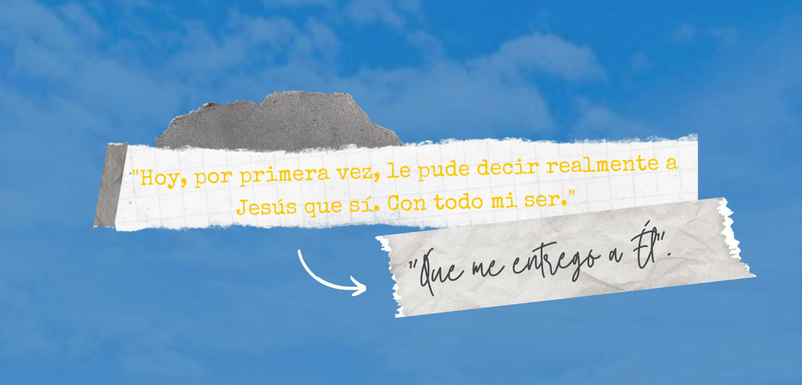

Come un bambino che soffre, che piange, che non capisce, ma che si fida dei suoi genitori, così Cecilia sopportò tutti i dolori e le angosce. Il suo Ideale, Dio, le aveva fatto capire anche qualcosa di grande, una chiave: Amare Gesù Abbandonato.
Dal più profondo del suo essere nasceva una domanda:Perché? E questa domanda Cecilia la unì a quella di Gesù che, essendo crocifisso, alla soglia della morte, anche si è chiesto: “Dio mio, perché mi hai abbandonato?” Se Gesù che era Dio, si sentì abbandonato da Dio Padre, anche noi in mezzo ai nostri dubbi e dolori possiamo imitarlo, cioè, dare la vita per Amore.
Essendo al 7° mese di gravidanza, hanno deciso di anticipare la nascita di María Agustina con un parto cesareo, per evitare complicazioni nella salute della bimba e poter aumentare gli interventi medici. Dopo uno di quegli interventi, uscendo dalla sala operatoria, era raggiante. Quando le è stato chiesto il motivo, a bassa voce ha risposto:
“ Hoy, por primera vez, le pude decir realmente a Jesús que sí. Con todo mi ser. Que creo en su Amor más allá de todo, y que esto es Amor de Él. Que me entrego a Él”.
È stato allora quando iniziò a scrivere tante lettere. Non voleva tenere per se la sua esperienza personale. Lo faceva sempre come un dono, mai come un peso per gli altri. In una lettera diceva:
“Le dije a Dios: quiero ser como Vos quieras que sea. Tener la personalidad que Vos quieras. Ser ante el que esté a mi lado como Vos quieras que sea. Tener la belleza que Vos quieras que tenga”.
Ed ai suoi allievi scriveva:
“ “Sapete cosa faccio quando il dolore è molto grande e penso di non farcela? Guardo il crocifisso, gli sorrido e gli dico: ‘Non posso offrirti questo: mi sembra che sia troppo. Ma tu fai finta che lo faccio’ E funziona! Dopo si sperimenta la Pace” A una amiga: “Gli amici sono un qualcosa di grande! Quanto sentimento disinteressato, volere il bene dell’altro al di là del proprio. Sentire che ti si gonfia il cuore quando hai notizie dell’altro. Piangi quando l’altro piange, ridi quando l’altro ride...”
Ed in quel Natale:
““Ieri sera ricordavo il dolore fisico di Maria per portare Gesù al mondo, pensavo che col mio dolore potevo essere copartecipe del suo, per portarLa nuovamente al mondo. Pur se implica del dolore, non c’è confronto con l’immensa gioia che ci da. Ed è per questo che sento che questa vita è un’avventura: qualcosa di inspiegabile, dal punto di vista humano. Che il dolore sia il cammino verso la pienezza! (...). Senza Dio al centro, la vita non ha senso”.
“Durante gli ultimi mesi ha dovuto essere ricoverata perchè doveva essere continuamente controllata. Le ultime settimane ha perso la coscienza.
Nonostante ciò, anche in quell’ultima tappa, irradiava una tale realtà, che le infermiere si avvicinavano spesso soltanto per vederla.”
(frammento del libro “Tus caminos son una locura” di Licy Miranda, Editrice Ciudad Nueva)
È morta il 1° Marzo 1985, a 28 anni. Coloro che sono stati attorno a lei concordano nel dire che al di là del dolore, Cecilia trasmetteva vita:
“Quando Cecilia è partita, un sacerdote che la visitava mi ha detto: Angelita, non ti domandare perché, , solo Dio lo sa, ma sí conoscerai il para “per cosa”.. Hoy aquí ante ustedes digo, que Ceci me enseñó a serle fiel a Dios y amar al prójimo como a sí mismo…
Ceci è stata testimone di amore per i suoi allievi e uno tra loro ha chiesto: Cosa è questa cosa di Dio Amore? Oggi quell’allievo è sacerdote. Se siamo fedeli a Dio, la santità collettiva che Chiara ci annunciò è possibile.
Una serata del 1984, Agustina non era ancora nata, siamo uscite al terrazzo della sua stanza che si affacciava sulla strada, eravamo in silenzio ed ad un tratto la sento dire: Mamma, quanto amo la gente, la vedo passare ed andrei dietro loro, entrerei nelle loro case per vedere come vivono e gli domaderei di cosa hanno bisogno.”
Tanti mi parlano di Cecilia [e mi dicono] “è con me”, “Cecilia è una presenza a casa mia”, “ho chiesto a Cecilia...”
Oggi io mi dico: Cecilia è tra la gente, sa come vive e di cosa ha bisogno. Il Dio Amore che lei mostrò ai suoi allievi oggi continua a manifestarsi da un terrazo più alto” (testimonianza di Angelita, mamma di Cecilia)